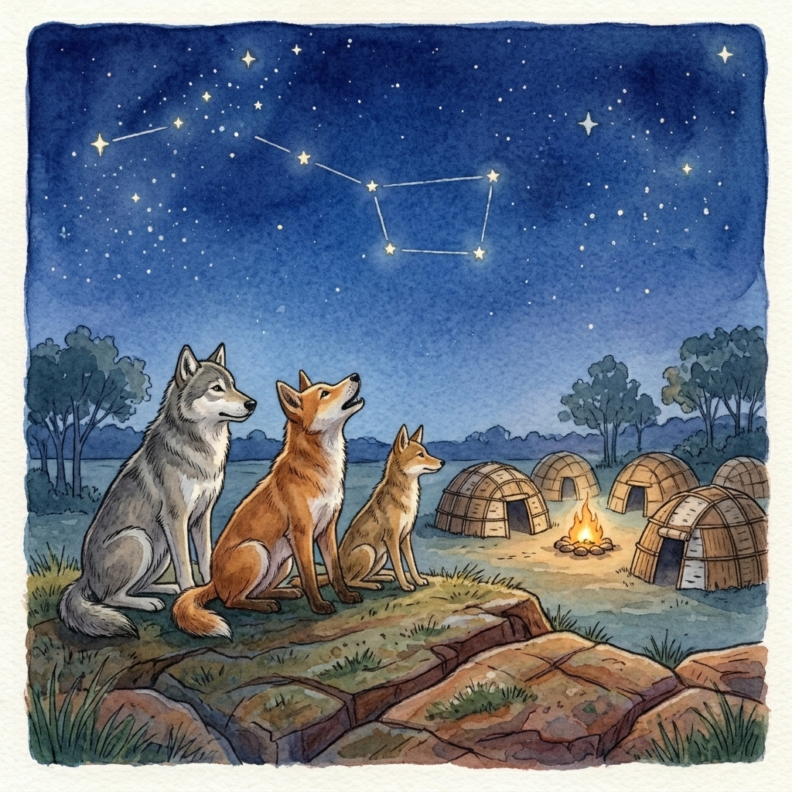

The Cree are a North American Indigenous peoples who live mainly in Canada north and west of Lake Superior. This is one of their stories called “Atima Atchakosuk”, or, “The Dog Stars”. This is a myth about the grouping of seven stars most people know as Ursa Minor, or the little dipper, and how they came to be.
In the long ago, people didn’t have dogs to play with them, to help them work, or to hunt. Children played alone, elders carried heavy loads by themselves, and hunters didn’t have help tracking game. When settlements were attacked by wildlife or other groups, the people would always be surprised and dismayed.
Over time, the wolf, coyote, and fox — relatives of the humans — took notice and were concerned. But what could they do to help?
To begin, they called together a council where the animals talked for many days and nights.
Fox spoke first. “These humans are poor hunters, even worse than the youngest of spring pups.”
“Not only that”, said wolf, “but their children play alone by the streams, where they are easily hunted by snake, bird, and bear.”
“And they are lonely when they play,” said Coyote, “and sleep cold and alone at night.”
“We must do something,” said Wolf. “Perhaps we can teach them our ways, so that they might learn and survive.”
“Yes,” said Fox. “We ourselves might be too fearsome, but perhaps our children would be a good influence.”
And so, by the end of their discussion, Wolf, Fox, and Coyote agreed that humans, feeble as they were, needed companions, and decided that they would help them by sending their own pups in all four directions, so that they might find humans and learn to live with the people.
Over many generations, the pups of the coyotes, wolves, and foxes adapted to life with the humans and began to flourish alongside them in play and work. Children played with furry friends, elders had help hauling heavy loads to where they needed to be, and hunters were more successful in providing for their communities thanks to the noses of their new hunting partners.
To honor their sacrifice, the creator honored the wolves, foxes, and coyotes by putting a reminder in the stars. First was the “Wolf Star'' which you may already know as Polaris. Second was the “Coyote Star”, third the “Fox Star”, and finally the four “Dog Stars'' which were the pups that were sent to the people in all four directions.
On a clear night this winter, see if you can catch a glimpse of the wolf star anchoring the leash of the dog stars with the help of the coyote and fox stars.
